Acest document are ca scop oferirea unui ghid simplu si concis de utilizare a aplicatiei noastre. Ilustratiile prezentate ajuta la intelegerea completa a conceptelor folosite in realizarea proiectului PasteIt.
PasteIt este o platformă unde poți stoca online orice text pentru a fi ușor de distribuit. Site-ul este destinat în mare parte programatorilor care doresc să împărtășeasca bucăți de cod sau informații de configurare (de servere, de baze de date), dar oricine se poate folosi de funcționalitățile aplicației.
Scopul documentului este de a veni in ajutorul noilor utilizatori care doresc sa interactioneze cu aplicatia noastra web. Cu ajutorul ilustratiilor grafice procesul de invatare a conceptelor din aplicatie devine facil. De asemenea, raportul detaliaza o descriere ampla a scenariilor care pot surveni in timpul folosirii aplicatiei.
In continuare se vor prezenta principalele functionalitati ale aplicatiei web.
Vizitatorii noi se pot înregistra pe platforma noastră în pagina de register, unde vor completa formularul de mai jos cu datele personale (email, nume, prenume) pentru a deveni utilizatori inregistrati.
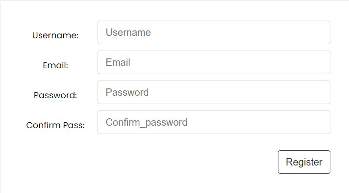Utilizatorii se pot autentifica pe pagina de login. In urma logarii acestia beneficiaza de intregul pachet de functionalitati ale site-ului.
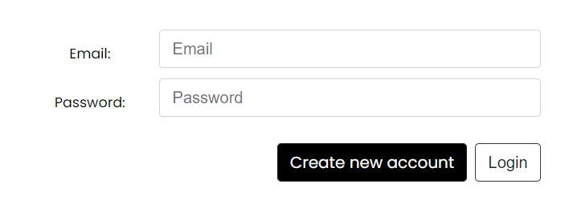Pe pagina principală utilizatorii de orice fel iși pot încărca blocurile de cod pe care doresc să le împărtășească cu restul persoanelor care accesează aplicația web.
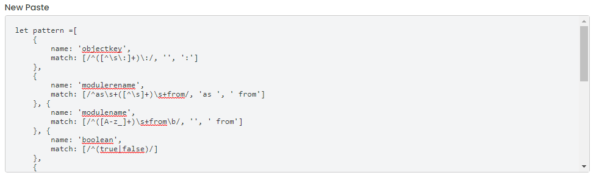In momentul crearii unei postari utilizatorul va alege limbajul de programare in care este scris codul astfel ca acestuia i se va aplica o colorare adecvata.
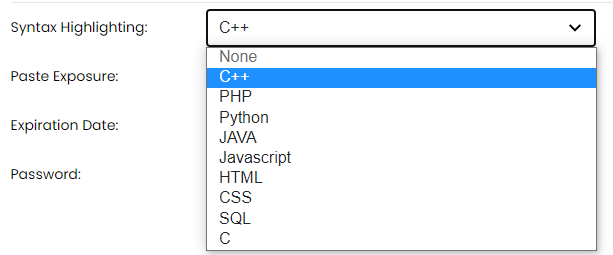Exista doua moduri de expunere a postarilor. Prima se refera la posibilitatea vizualizarii de catre toti utilizatorii (logati sau nu), iar cea de-a doua este modalitatea de a pastra postarile private.
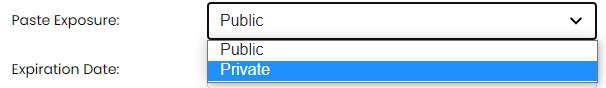Postările din cadrul platformei vor avea un termen de valabilitate. Codul postat de vizitatorii neautentificați va fi păstrat în baza de date pe durata a 30 de zile. Beneficiul unui utilizator autentificat este dat de faptul că are posibilitatea de a iși alege perioada de expirare a codului încărcat.
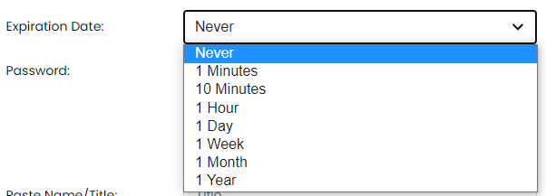Utilizatorul are posibilitatea de a stabili o parola pentru codul publicat astfel incat doar persoanele care cunosc aceasta parola vor putea vizualiza codul.
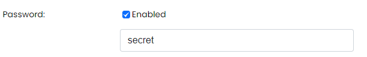Aceasta optiune poate fi folosita atunci cand dorim ca o postare sa fie stearsa dupa prima vizualizare.
Procedeul de gestionare a postărilor constă în mai multe operații: ștergere, modificare, schimbare a datei de expirare, modificarea vizibilității unei postări și schimbarea modului de afișare a codului.
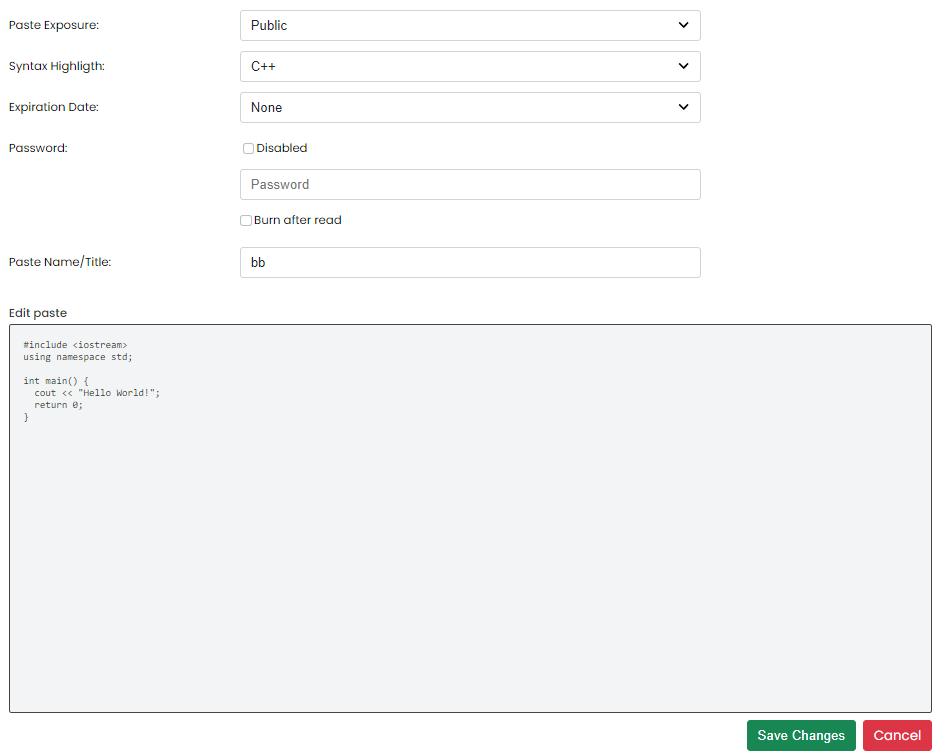Pentru ca un utilizator neautentificat să poată publica codul dorit i se va cere să rezolve o problemă de tip Captcha.
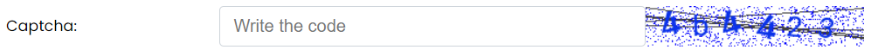Utilizatorii autentificați pot alege între două teme de culoare (light sau dark) din pagina de profile. Schimbarea temei se va face în manieră dinamică prin intermediul unui script javascript, care va salva un cookie cu tema preferată a utilizatorului.
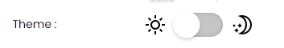In urmatoarele subsectiuni vor prezenta modul de interactionare a utilizatorilor cu aplicatia PasteIt.
In sectiunea de navigare a paginii putem realiza urmatoarele actiuni: -accesarea paginii de contact; -accesarea paginilor de logare si autentificare; -accesarea paginii "Despre"; -accesarea in cazul utilizatorilor autentificati a paginilor "Profil", "Setari", "Postarile mele" si butonul de delogare
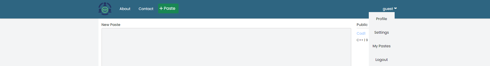In pagina principala se pot gasi urmatoarele: -formularul de publicare a unui paste; -sectiunea de vizualizare a ultimelor postari publice
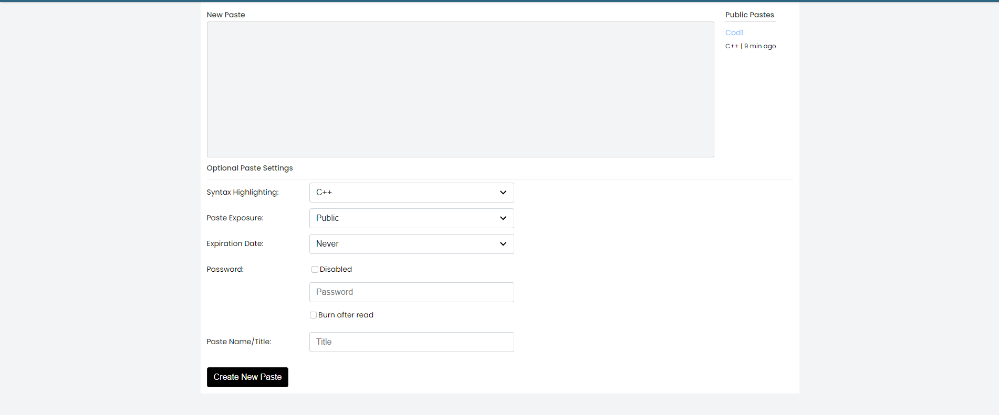Pentru fiecare postare exista o pagina dedicata in care este afisat blocul de cod incarcat de utilizator, evidentiat in functie de limbajul de programare. Pagina cuprinde detalii despre postarea respectiva precum: numele creatorului, data publicarii, timpul de expirare si numarul de vizualizari. In plus, exista posibilitatea de a vedea sursa bruta a codului ("raw") si se poate descarca prin "download". Mai mult utilizatorii cu drept de editare asupra postarii pot face aduce modificari. In josul paginii creatorul paste-ului poate completa formularul prin care va oferi acces altui utilizator asupra acestuia.
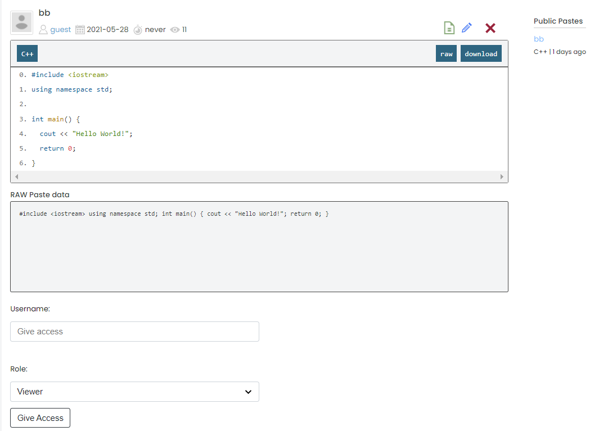Prin accesarea paginii de editare a unei postari utilizatorii cu acest drept pot crea o versiune noua a codului care va putea fi propusa spre vizualizare de catre alti utilizatori cu acelasi drept asupra paste-ului.
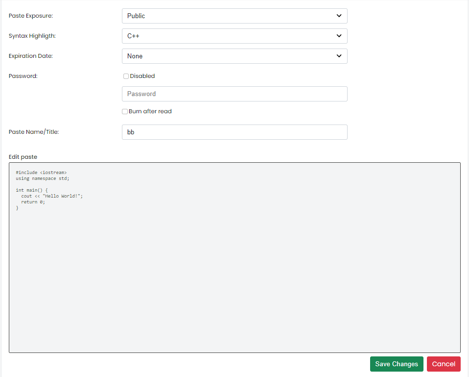Prin procesul de editare a unei postari se creaza mai multe versiuni care vor putea fi accesate in pagina specifica versiunilor. Se va afisa numele persoanei care a editat, momentul crearii, data ultimei actualizari si actiunile posibile asupra versiunii. Acestea sunt vizualizarea specificatiilor codului si stergerea versiunii.
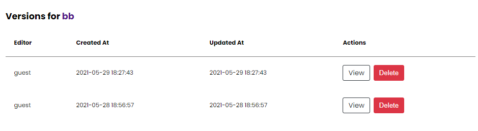Pe pagina unei versiuni este prezentat blocul de cod specific. Prin intermediul butonului "Promote" editorul poate promova versiunea curenta ca fiind postarea principala.
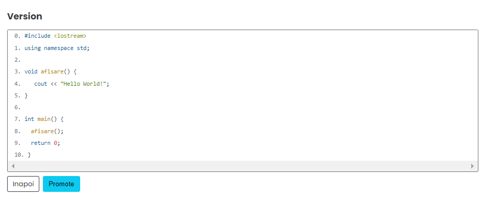Utilizatorul va avea o pagina dedicata propriilor postari. Va putea vizualiza titlul, sintaxa si expunerea. In plus, acesta poate accesa pagina unei postari apasand butonul "Read More".
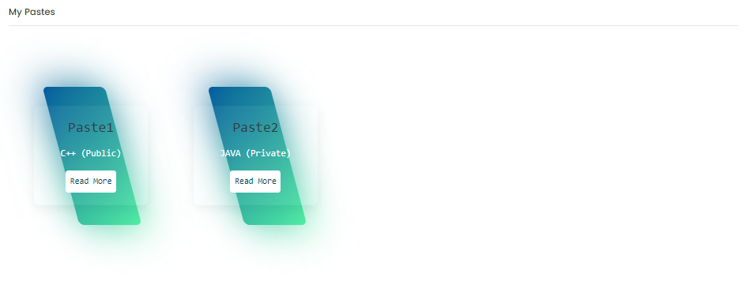Prin intermediul acestei pagini utilizatorul isi poate modifica numele, emailul, poate alege o poza de profil si isi poate seta tema preferata. In dreapta paginii se gasesc butoanele pentru acces rapid catre: profil, setari, postarile proprii si posibilitatea de stergere a contului.
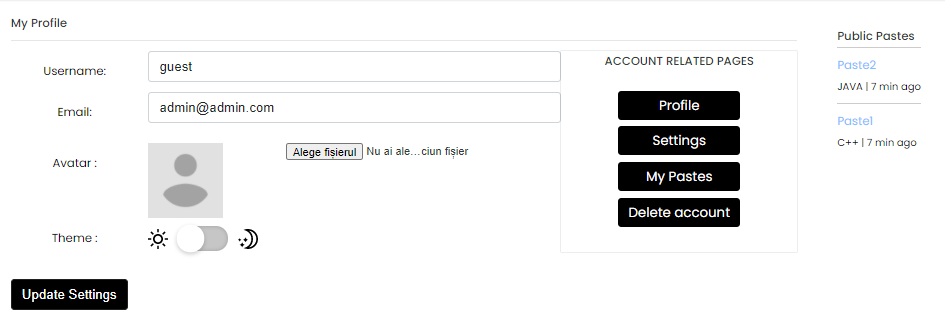Aici utilizatorul isi poate personaliza specificatiile implicite ale unui paste. Acestea constau in alegerea sintaxei, timpului de expirare si a modului de expunere a postarii. De asemenea, si pe aceasta pagina exista posibilitatea de a accesa rapid pagini principale din aplicatie.
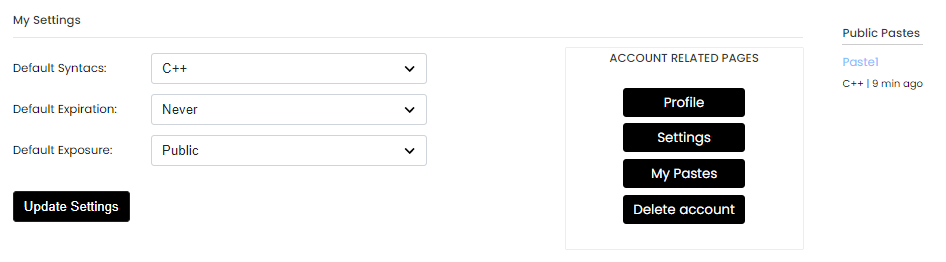Vizitatorii aplicatiei web isi pot oferi parerea legata de interactiunea cu site-ul prin completarea formularului de pe pagina de contact.
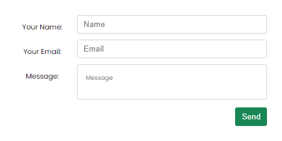Atunci cand un vizitator doreste sa vizualizeze o postare parolata va fi redirectionat catre aceasta pagina. Prin completarea corecta a parolei acesta va debloca postarea si va fi condus catre pagina specifica postarii.
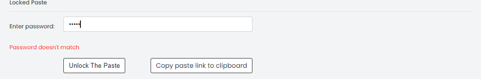In incercarea de a accesa o postare cu proprietatea "burn after read" activa vizitatorul va fi intampinat cu o pagina de atentionare prin care i se va explica in ce consta acest concept.
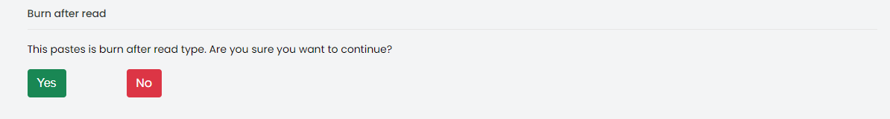Paste It nu necesită cerințe de sistem deosebite pentru a putea fi utilizată, fiind compatibila cu orice web browser modern.
Având în vedere faptul că postările utilizatorilor anonimi sunt șterse după o anumită perioadă de timp, merită menționat faptul că această perioadă de expirare se poate extinde dacă utiliatorul se înregistrează pe site.
Deoarece ținem la securitatea datelor utilizatorilor noștrii, vom folosi SHA pentru securizarea parolelor conturilor înregistrate pe site.